2 Create and assign cell state scores
2.1 How it works
We calculate the average expression levels of each program (cluster) on single cell level, subtracted by the aggregated expression of control feature sets. All analyzed features are binned based on averaged expression, and the control features are randomly selected from each bin.
2.2 Progenitors score
genes.progenitors <- c('Sox2', 'Notch1', 'Rrm2',
'Hmgb2', 'Cenpa', 'Ube2c',
'Hes5', 'Fabp7')
genes.list <- list(genes.progenitors)
enrich.name <- "Progenitors_"
scores <- paste0(enrich.name, '1')
dat.seurat <- AddModuleScore(dat.seurat,
features = genes.list,
pool = rownames(x = dat.seurat),
nbin = 5,
seed = 123456,
ctrl = length(genes.list),
k = FALSE,
name = enrich.name)
for (i in seq(1:length(genes.progenitors))){
print(FeaturePlot(object = dat.seurat,
features = genes.progenitors[i],
reduction = 'umap',
cols = c("grey90", brewer.pal(9,"YlGnBu")),
pt.size = 0.2,
slot = "data",
order = TRUE))}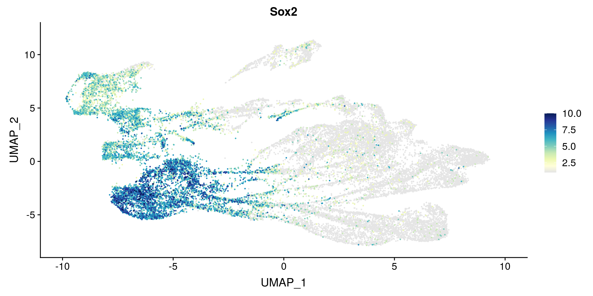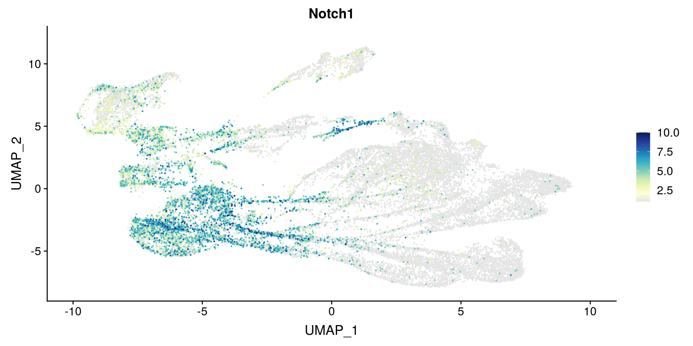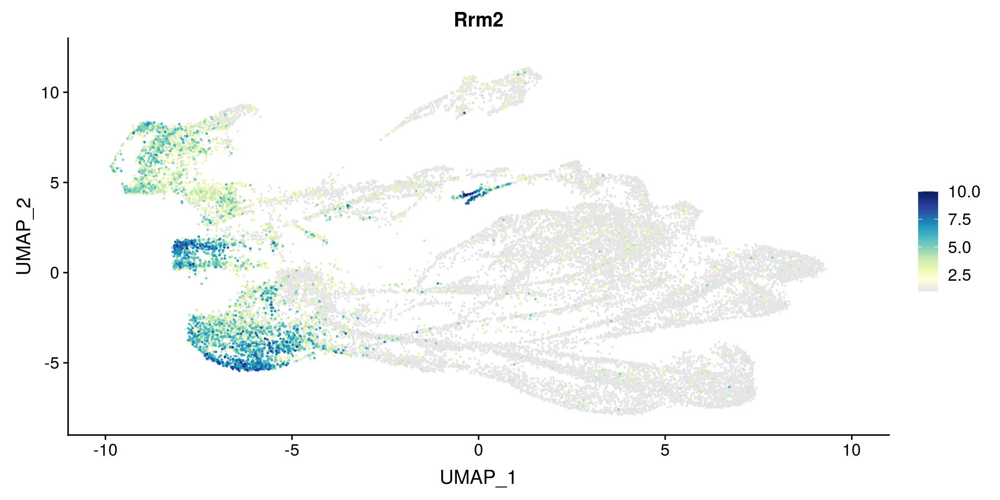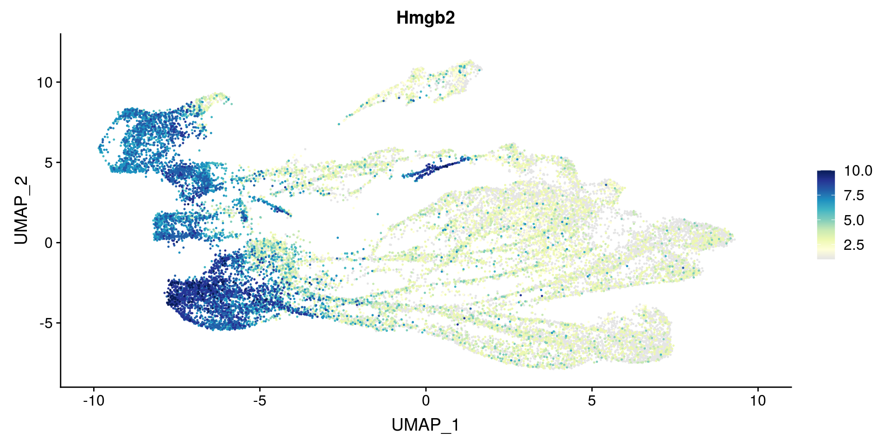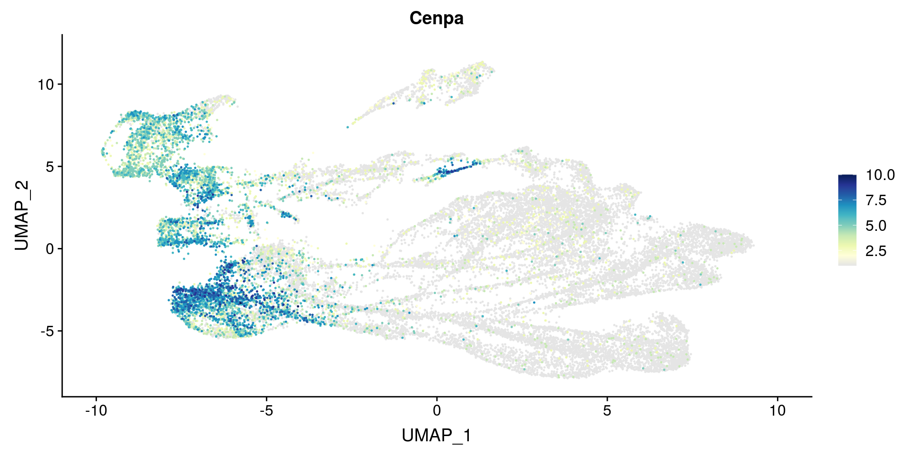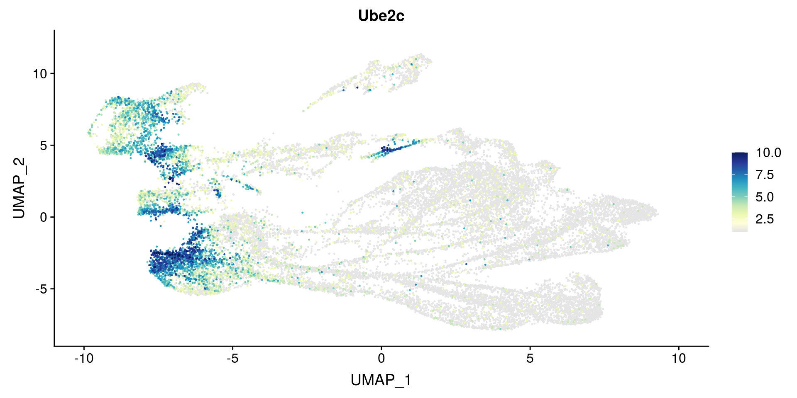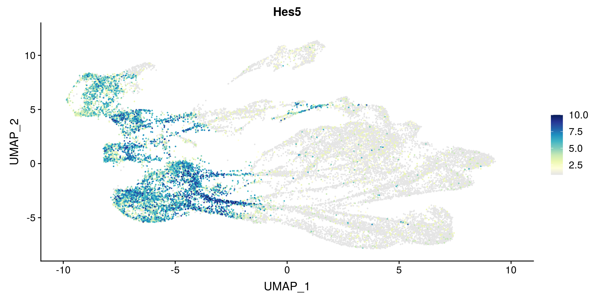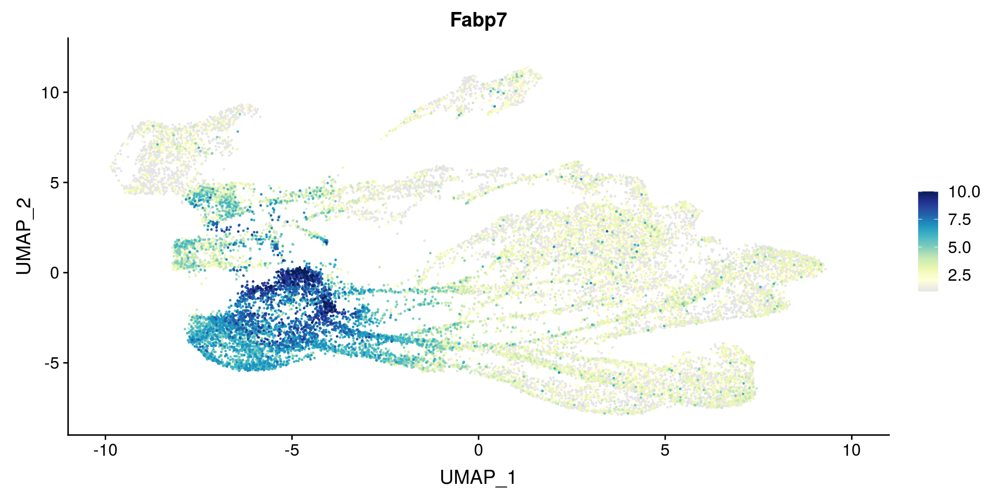
2.3 Neurons score
2.3.1 With Tubb3 in the score
genes.neurons.tubb3 <- c('Tubb3', 'Stmn2', 'Nova1',
'Snrpn', 'Pcsk1n', 'Meg3',
'Rtn1', 'Stmn3', 'Mllt11',
'Mapt', 'Ina')
genes.list <- list(genes.neurons.tubb3)
enrich.name <- "Neurons_Tubb3_"
scores <- append(scores, paste0(enrich.name, '1'))
dat.seurat <- AddModuleScore(dat.seurat,
features = genes.list,
pool = rownames(x = dat.seurat),
nbin = 5,
seed = 123456,
ctrl = length(genes.list),
k = FALSE,
name = enrich.name)
for (i in seq(1:length(genes.neurons.tubb3))){
print(FeaturePlot(object = dat.seurat,
features = genes.neurons.tubb3[i],
reduction = 'umap',
cols = c("grey90", brewer.pal(9,"YlGnBu")),
pt.size = 0.2,
slot = "data",
order = TRUE))}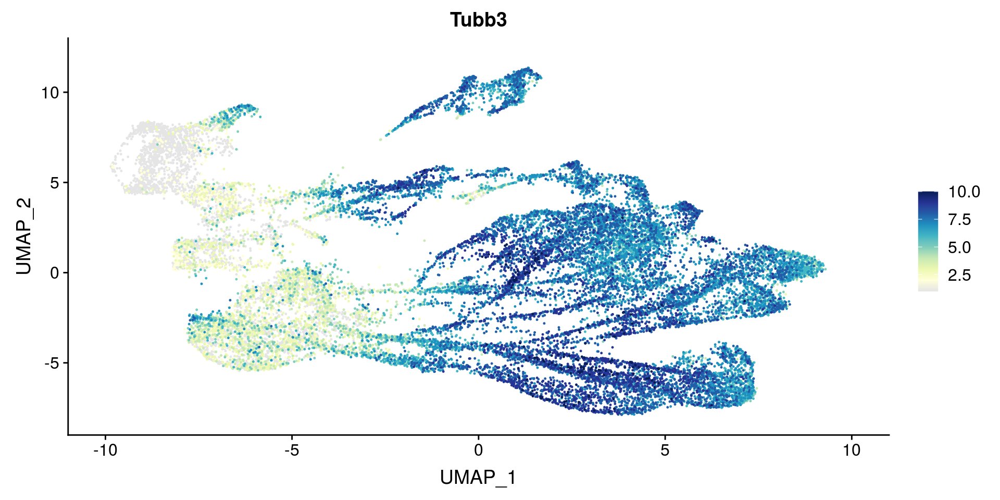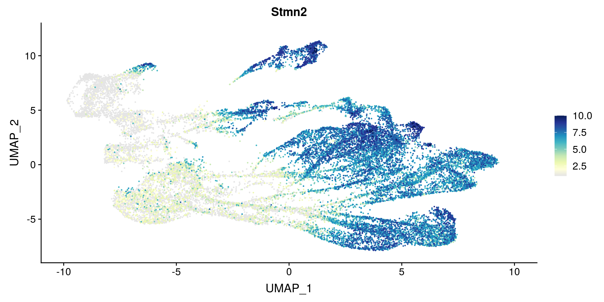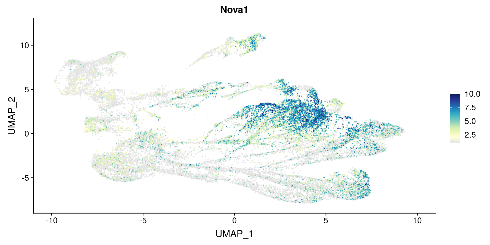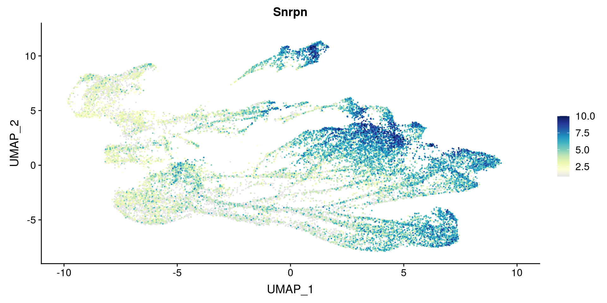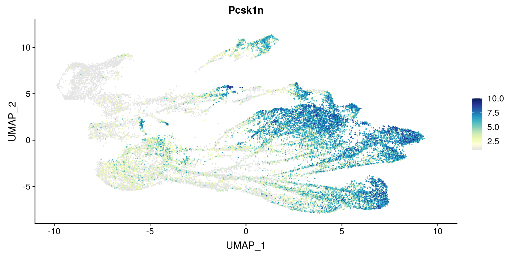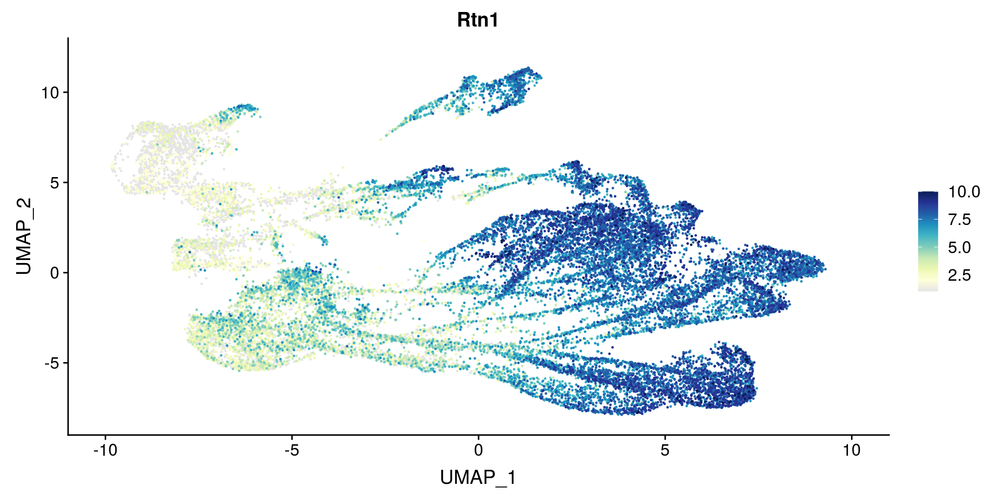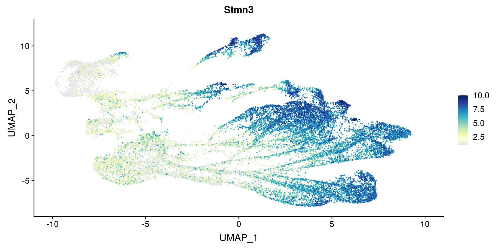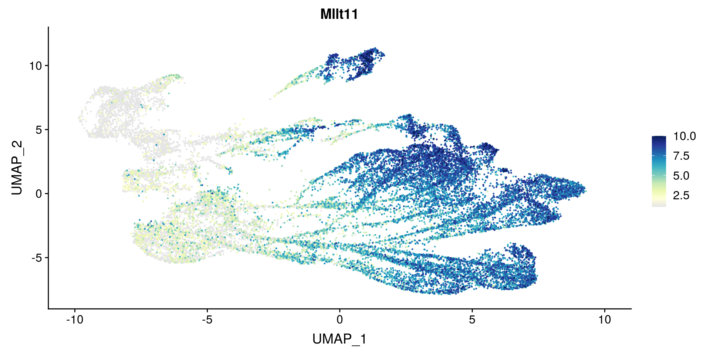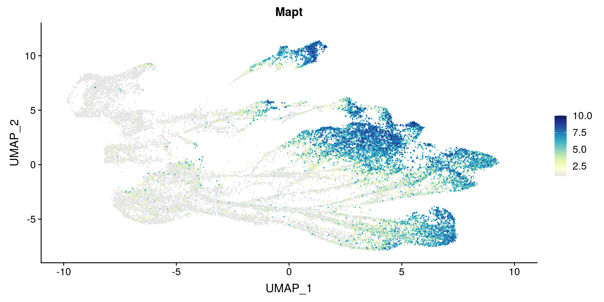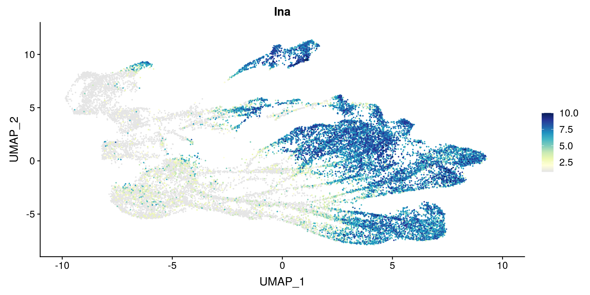
2.3.2 Without Tubb3 in the score
genes.neurons <- genes.neurons.tubb3[-1]
genes.list <- list(genes.neurons)
enrich.name <- "Neurons_"
scores <- append(scores, paste0(enrich.name, '1'))
dat.seurat <- AddModuleScore(dat.seurat,
features = genes.list,
pool = rownames(x = dat.seurat),
nbin = 5,
seed = 123456,
ctrl = length(genes.list),
k = FALSE,
name = enrich.name)
for (i in seq(1:length(genes.neurons))){
print(FeaturePlot(object = dat.seurat,
features = genes.neurons[i],
reduction = 'umap',
cols = c("grey90", brewer.pal(9,"YlGnBu")),
pt.size = 0.2,
slot = "data",
order = TRUE))}